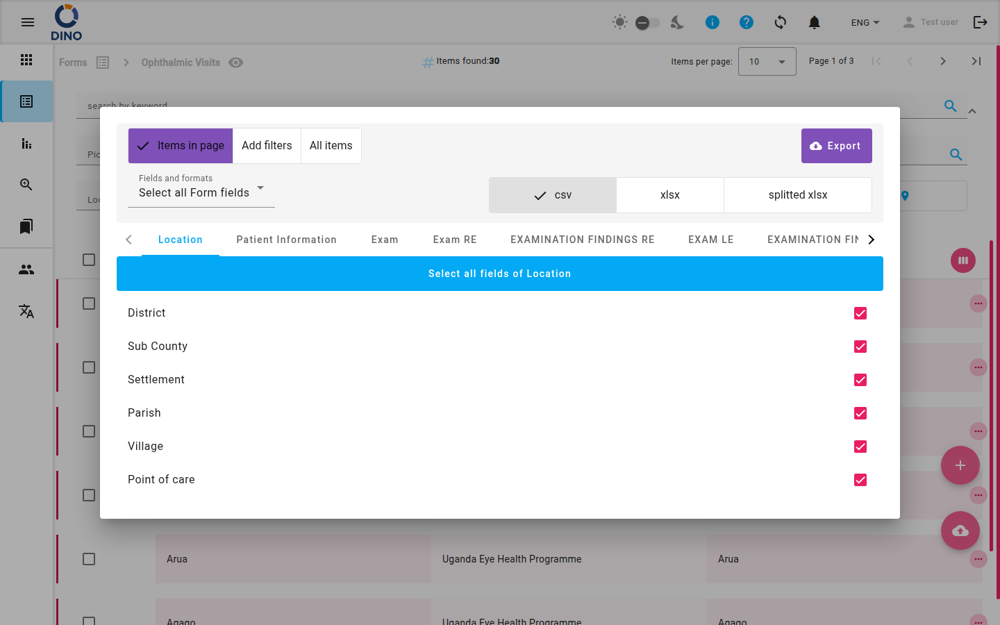

Форми
Сторінка Форми — це ваша відправна точка для збору структурованих даних у Dino. Тут ви можете переглядати, створювати та керувати form schema, а також переглядати й опрацьовувати дані, зібрані через кожну форму.

Головний вигляд відображає сітку плиток form schema. Кожна плитка показує назву та іконку форми. При наведенні на плитку з'являються кнопки дій:
- Редагувати схему – Змінити структуру форми (поля, валідація, метрики).
- Видалити схему – Видалити form schema (і всі її дані).
- Поділитися URL – Отримати публічне посилання для зовнішнього надсилання даних.
- Переглянути карту – Відкрити карту для даних із географічними координатами.
- Чат із вашими даними – Скористайтеся функцією DataChat, щоб ставити запитання про дані природною мовою.
Tip
Доступні на плитці дії залежать від ваших прав. Ви можете бачити не всі кнопки.
Щоб створити нову form schema, натисніть плаваючу кнопку + у правому нижньому куті. Ви перейдете на сторінку Редагувати схему форми, щоб розробити свою форму.
Робота з даними
Натисніть на плитку form schema, щоб перейти до її списку форм. Ця таблиця показує всі записи даних, зібрані для цієї схеми.

Список містить панель фільтра, яка дозволяє шукати за ключовим словом, діапазоном дат, метриками, статусом, користувачем тощо. Ви також можете зберігати набори фільтрів для швидкого повторного використання.
Експорт
Скористайтеся кнопкою експорту, щоб завантажити дані у форматі CSV або XLSX.

Діалогове вікно експорту дозволяє вказати кілька важливих параметрів експорту:
1) Скільки форм експортувати.
1) Форми на сторінці. Експортувати лише форми, які відображалися на попередній сторінці, можливо, відфільтровані та розподілені на сторінки.
2) Додати фільтри або Усі елементи/1 фільтр. Якщо ви вже застосували один фільтр до свого списку форм, можна експортувати лише відфільтровані форми (другий варіант). Якщо ви ще не застосували жодного фільтра, відображається перший варіант, який дозволяє додати більше фільтрів.
3) Усі форми. Усі форми без фільтрації та пагінації.
2) Формат.
1) CSV. Дані буде експортовано у файл CSV. Кожна витягнута форма буде рядком у файлі, де поля будуть стовпцями.
2) XLSX. Експорт у форматі Excel.
3) Розділений XLSX. Експорт у форматі Excel, де кожен слайд — це окремий аркуш.
3) Параметри полів
1) Вибрати всі поля форми. Дозволяє експортувати всі поля форми.
2) Значення назв. Для полів із попередньо визначеними значеннями (поля з одним або кількома варіантами вибору) експортоване значення — це відображуване значення, а не внутрішній код, який використовується для представлення цього значення.
3) Формат аналізу даних. Форми, які містять повторювані слайди та множинний вибір, експортуються в кілька рядків, кожен рядок містить лише один повторюваний слайд і лише один множинний вибір, інші поля залишаються незмінними. Додається додатковий стовпець під назвою conta. Цей стовпець набуває значення 1 лише в першому рядку групи повторень і 0 в інших.
4) Окремі стовпці. Множинний вибір експортується як кілька стовпців.
4) Слайд вибору. Дозволяє переглянути список полів на кожному слайді, якщо ви хочете експортувати лише деякі поля, а не всі.
5) Вибір полів. Ви можете вибирати/знімати вибір окремих полів.
Деякі стовпці експортованого файлу не можна зняти з вибору. Це:
- Form ID
- Creation date
- Update date
- DINO User data (mane and ID)
- Metrics data (id, name, etc...)
- Dinoinvalid
Дії з рядками
Натисніть на рядок, щоб розгорнути його деталі, або скористайтеся діями рядка (переглянути, редагувати, видалити, роздрукувати як PDF, завантажити як DOCX, роздрукувати бейдж). Доступні дії залежать від ваших прав і конфігурації форми.
Створення нового запису даних
Натисніть плаваючу кнопку + на сторінці списку, щоб відкрити порожню форму для введення даних.

Заповніть поля та надішліть. Новий запис даних з'явиться у списку.
Масові операції
Виберіть кілька записів даних за допомогою прапорців, щоб виконати масове видалення або редагування (змінити те саме значення поля в усіх вибраних записах).
Додаткові вигляди
- Карта – Перегляньте дані з географічними координатами на інтерактивній карті. Дізнайтеся більше в розділі Карта форм.
- DataChat – Запитуйте свої дані форми природною мовою. Деталі дивіться в розділі DataChat.
Warning
Функція DataChat може витрачати кредити. Перевірте баланс кредитів вашого облікового запису перед використанням.